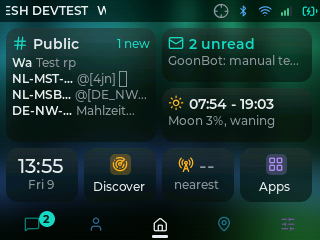
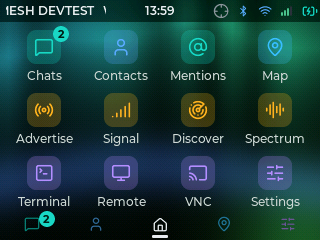
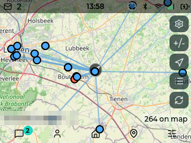
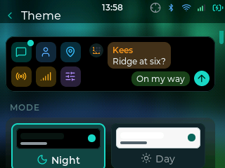
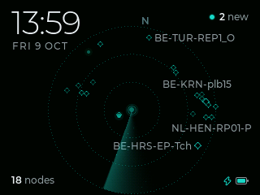
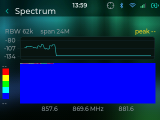

Standalone
Just WADAMESH: the device boots straight into it.
Best if you want the simplest path: flash once, from your browser, and you're done.
Choose standalone
Free, as it should be
The whole mesh, on the radio itself.
MeshCore firmware with chat, channels, contacts, a map and apps on the device itself, by touch, keyboard or trackball, and a companion radio for the MeshCore app at the same time. Runs on 13 boards, from the LilyGo T-Deck and Heltec V4 to the Tanmatsu.




No phone needed. Every picture here is a real screenshot from a T-Deck running WADAMESH.
Widgets for the clock, unread messages, the radio, GPS, the battery and the nodes heard, plus shortcuts to any app. Hold one to rearrange.

Direct messages and channels with delivery receipts, hop counts, quick replies, colour emoji and a keyboard with accents.
OpenStreetMap you pan and zoom on the device, with your contacts' positions on it. Put tiles on an SD card and it works with no Wi-Fi or data.
Night and Day modes, colour looks and backgrounds, all set on the device. Everything here is the Regular look on the aurora.

Instead of going dark, the screen can show your node in the middle and the nodes you have heard around it, at their real bearing when positions are known.

Signal, Discover and a spectrum view are built in. RF Monitor, Airtime and more come from the Store, and anyone can write one in Lua.
From keyboard handhelds to touch panels. Pick yours to jump straight to its installer.
Pick the path that fits how you like to use your device. You can switch later.
wadamesh.com/#installJust WADAMESH: the device boots straight into it.
Run WADAMESH as one app inside bmorcelli's Launcher on the LilyGo T-Deck.
Plug the device in over USB and flash it right here. Works in Chrome or Edge on desktop.
Stable is the tested default. Pick it unless you want to help test. Beta · testing gets new features and fixes earlier, before they are proven, so it can be rough. It is for trying things early and reporting bugs.
Already running WADAMESH? You do not have to reflash to switch channels: turn on Settings → About → "Get test builds (beta)" on the device and it updates to test builds over Wi-Fi. Switch it off to go back to stable.
Testing a beta? Report from the device (Settings → About → "Send a test report") and it shows up on the test matrix, which is what the next stable is promoted on.
Beta builds are newer and less tested: for trying things early and reporting bugs. On a T-Deck under Launcher you download the .bin and side-load it.
Plug your board into your computer with a USB data cable. Many cables only charge.
Hit Install below, choose the serial port, and let it flash. It does a clean full install.
The device reboots into WADAMESH. Set your name + region in the first-run wizard.
No devices match “”.
ESP32-S3 keyboard handheld.
Fully supportedFully supportedEverything wadamesh offers works here, tested on every release.Early PCB · e-paper · no frontlight. Check the board revision before flashing.
Partially supportedPartially supportedV1.0 uses GPIO45 for touch reset and GPIO38 for its 1.8 V rail. Do not flash the V1.1 image: its frontlight PWM holds V1.0 touch in reset. This target needs broader hardware validation.Experimental and beta only. Please flash with care and report what works and what does not.
Later PCB · e-paper · GPIO45 frontlight. Check the board revision before flashing.
Partially supportedPartially supportedThe e-paper display, touch, keyboard, radio, GPS, microSD, battery and frontlight work on the tested V1.1 unit. Do not use this image on V1.0 hardware.Experimental and beta only. Please flash with care and report what works and what does not.
ESP32-S3 · e-paper · keyboard + touch handheld.
Partially supportedPartially supportedA new board, contributed by the community (PR #545). It is the T-Deck Pro's hardware with the peripheral power rails and resets behind an I/O expander and a fuel gauge for the battery, and it reuses the Pro's display and touch drivers. Tested by its contributor, on one unit.Experimental and beta only. Please flash with care and report what works and what does not.
ESP32-P4 · AMOLED touch handheld. Two quick questions pick the right image.
Partially supportedPartially supportedThe AMOLED + SX1262 model is hardware-tested. LR2021 support is compile-tested and needs device validation. Bluetooth pairing is unavailable; use Wi-Fi or USB for the phone-app link.The radio is the option you picked when you ordered. Not sure about Wi-Fi? Start with Works. If Wi-Fi then never connects, your unit's Wi-Fi chip still runs LilyGo's factory firmware (ESP-AT): pick Never connects and install that image, it brings Wi-Fi back.
New board: beta channel only until the next stable.
ESP32-P4 · TFT-LCD touch handheld. Two quick questions pick the right image.
Partially supportedPartially supportedBoth LCD radio variants are compile-tested and need hardware validation. Bluetooth pairing is unavailable; use Wi-Fi or USB for the phone-app link.The radio is the option you picked when you ordered. Not sure about Wi-Fi? Start with Works. If Wi-Fi then never connects, your unit's Wi-Fi chip still runs LilyGo's factory firmware (ESP-AT): pick Never connects and install that image, it brings Wi-Fi back.
New screen variant, not yet hardware-tested, beta only. Flash with care and report back.
ESP32-S3 QWERTY + rotary encoder.
Partially supportedPartially supportedNew community port (thanks @codemonkeybr). The core works: LoRa mesh communication, chat, contacts, channels and the phone-app link. Pick the build that matches your radio chip.Radio LR1121:
Radio SX1262:
New board: beta channel only until the next stable.
ESP32-S3 with CHSC6x touch.
Fully supportedFully supportedEverything wadamesh offers works here, tested on every release.ESP32-S3 · 8 MB PSRAM · SD card.
Partially supportedPartially supportedThe core works: LoRa mesh communication, chat, contacts, channels and the phone-app link. This revision is still being hardware-verified, so flash with care and report back.New board, not yet hardware-tested, beta only. Please flash with care and report back.
ESP32-S3 QWERTY handheld (LR1110).
Partially supportedPartially supportedThe core works: LoRa mesh communication, chat, contacts, channels and the phone-app link. Not every feature has been ported or hardware-verified on this board yet.New board: beta channel only until the next stable.
3.5" 480×320 touch display; requires an SX1262 module in the LoRa expansion slot.
Partially supportedHardware validation pendingThis build is for the Advance 3.5 with an external SX1262, not other CrowPanel models. Display, touch, radio and software-SPI microSD are ported from the hardware reference; behaviour on a physical unit has not been verified. Landscape is the default, with portrait available in Display settings. No battery monitoring.Beta only. Attach the SX1262 before booting; flash with care and report what works.
ESP32-S3 touch node.
Partially supportedPartially supportedThe core works: LoRa mesh communication, chat, contacts, channels and the phone-app link. Not every feature has been ported or hardware-verified on this board yet.New board: beta channel only until the next stable.
ESP32-P4 keyboard handheld.
Partially supportedPartially supportedThe core works: LoRa mesh communication, chat, contacts, channels and the phone-app link over Wi-Fi/USB. Some features are still settling on this board (Bluetooth pairing has known gaps).Already have one? No USB flashing needed: install WADAMESH straight from the Tanmatsu app store on the device.
Get a TanmatsuESP32-S3 · 16 MB · 8 MB PSRAM.
Fully supportedFully supportedEverything wadamesh offers works here, tested on every release. Contributed by the community (PR #158).Beta channel only until the next stable.
ESP32-S3 · 16 MB · 8 MB PSRAM · GPS · microSD.
Partially supportedPartially supportedThe core works: LoRa mesh communication, chat, contacts, channels and the phone-app link. The display, touch, GPS, microSD and battery were brought up on real hardware by the community contributor (PR #391), but the board is not tested on every release. Updating from the device only works from beta 80 onwards, so update from this page if you are on an earlier build.Beta channel only until the next stable.
T-Deck not detected? Hold the trackball while tapping reset to force download mode.
Launcher is a multi-app boot menu for ESP32 devices: keep it, and run WADAMESH as one of your apps.
This path is for the LilyGo T-Deck only. On any other board, install Standalone instead.
Stable is the tested default; Beta gets new builds earlier. The download below follows this choice.
Flash bmorcelli's Launcher to your device, following its own installer at bmorcelli.github.io/Launcher.
Grab the WADAMESH app image for your board below, then install it from Launcher (via its web UI / OTA, or copy the .bin to your SD card).
Pick WADAMESH from the Launcher menu. Settings persist to SD, so they survive Launcher's slim partition.
app image (no bootloader)
Download .binYou're downloading version ….
The file saves as wadamesh-tdeck.bin; rename it if you keep several.
New to Launcher? It's the easiest way to try WADAMESH without giving up your other firmware, and you can fully switch to Standalone any time.
Everything past the install. The round buttons at the edge of the page lead here too.
Every screen explained, from first boot and adding contacts through channels, room servers, the map and the settings that matter.
Read the guideWrite your own apps. They install from the Store on the device and sit next to the built-ins. One file, no toolchain, no firmware build.
Build an appBuilding wadamesh yourself and running it on a Tanmatsu, where it installs as an app under the launcher rather than as standalone firmware.
Read the guideDownload the area you care about to the SD card so the map works with no Wi-Fi and no data, which is the point of carrying a mesh radio.
Get map tilesYour device's SD card and internal storage in the browser, over the USB cable: upload map tiles, download backups and screenshots, clear out old files. Open USB Files on the device, then connect from Chrome or Edge.
Open USB FilesWhich boards have been vouched for on the current test build, and what is still holding up the next stable release. Running a beta? Report from the device in two taps and your board joins the table.
See the matrixReport anything broken or ask for a feature on GitHub. Reports with a board name and what you did get fixed fastest, and plenty already have.
Open an issueWalkthroughs, demos and reviews from the community.